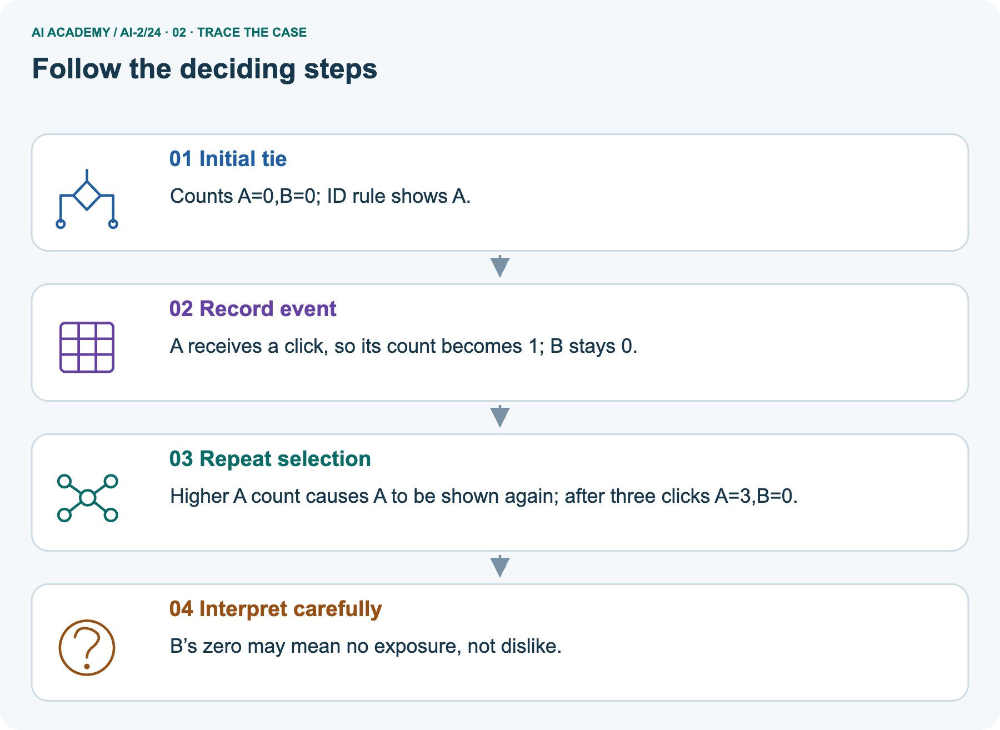
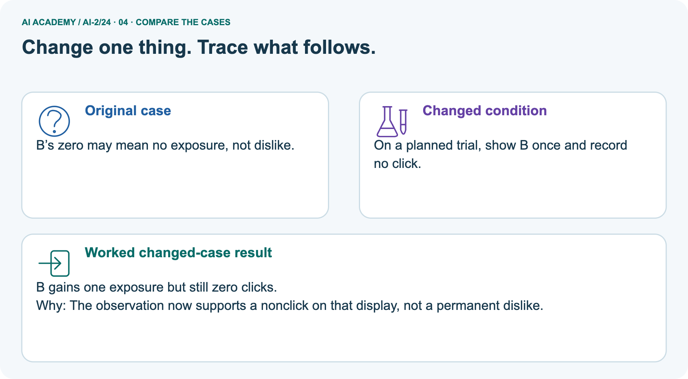
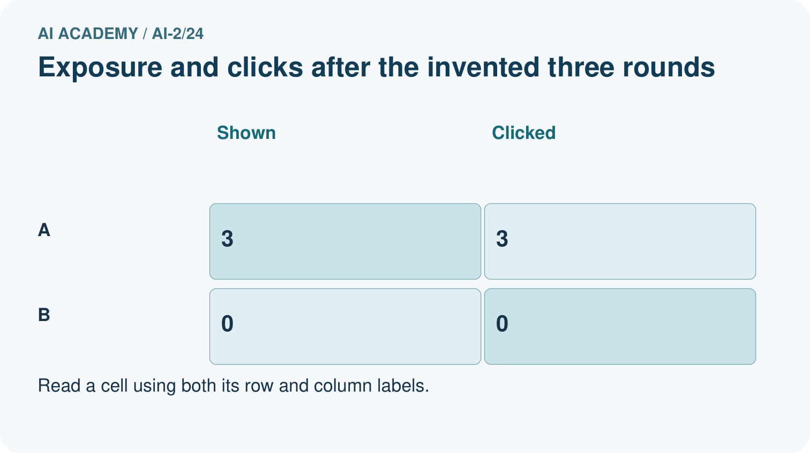
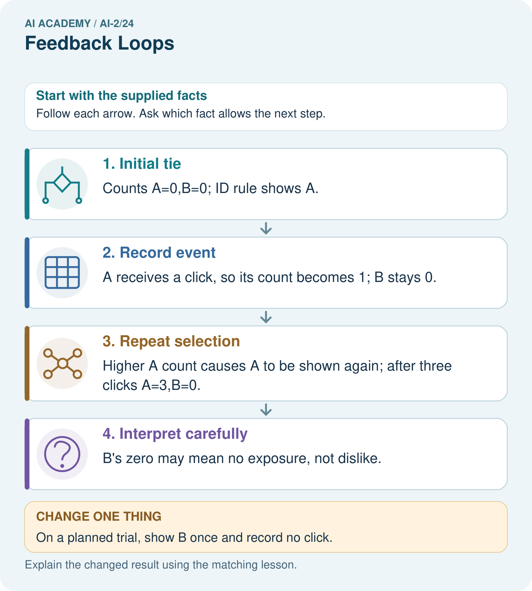
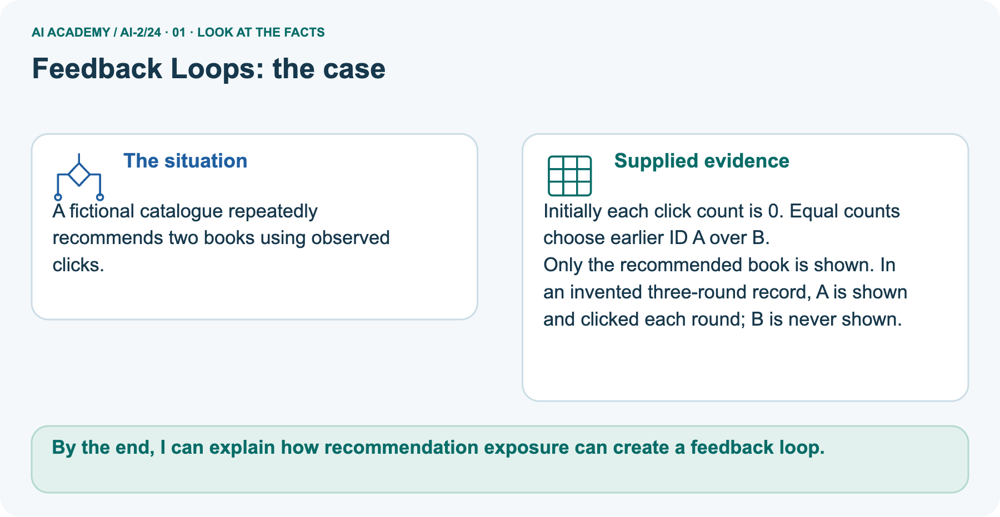
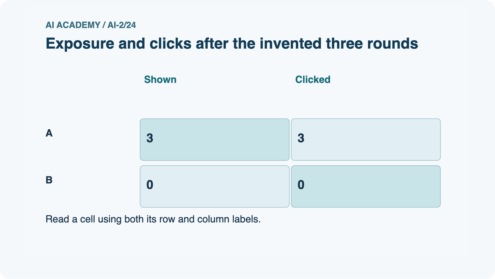
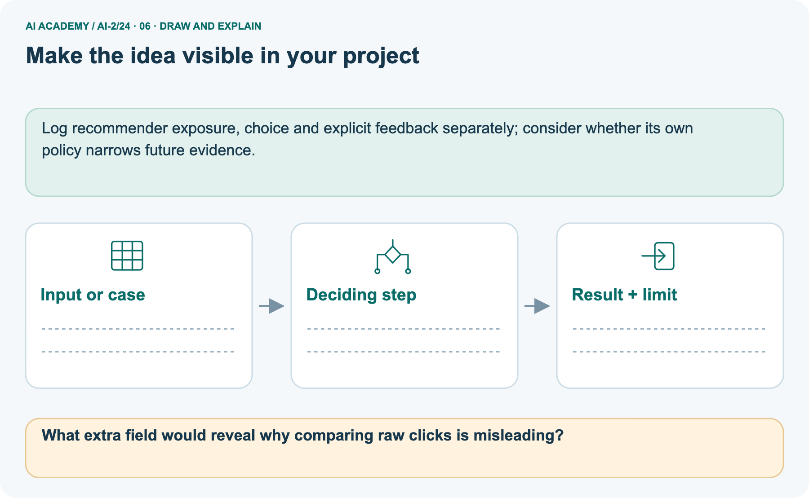

AI Academy · Level 2 · Grade 7 · Week 24 · Student lesson
Feedback Loops
Learn to understand, design, build, test and explain AI systems responsibly.
Project: Transparent Book Recommender
THE CONNECTED WEEK
Log what was shown. Log what happened. Inspect the loop.
Explain how a policy shapes future evidence without equating unshown items, nonclicks and dislike.
Keep one habit: Scripted event contract → repeated selection → planned exposure comparison → fresh independent audit.
Main lesson · Section 1
Did the item get no clicks, or no chance to be seen?
Trace how selection changes exposure and the evidence used next.
The current feedback-loop goals
I can separate exposure, clicks and explicit preference feedback.
I can trace how a selection policy changes later evidence.
I can limit conclusions from unshown items and small exposure counts.
Recall a hard eligibility requirement
Close your notes first. A rough first answer helps us choose the right starting point; it is not a score for your ability.
An option violates a hard duration limit but has the best score. Should it win?
Your end goal
By the end, I can explain how recommendation exposure can create a feedback loop.
Earlier wording, alternatives and picture transcripts
Your learning target
Remember before reading
Without opening the old lesson, explain one key idea from Recommendation Scores. Give an example and a mistake that the idea helps you avoid.
Without opening the old lesson, explain one key idea from Similarity by Selected Traits. Give an example and a mistake that the idea helps you avoid.
Without opening the old lesson, explain one key idea from Missing Data. Give an example and a mistake that the idea helps you avoid.
After trying, check the relevant lesson or ask your teacher. Change the part of your explanation that the evidence shows was wrong.
Week 24: Feedback Loops
Recommendations influence behavior, which then becomes new data.

THINKER MISSION
Map how repeated clicks can narrow future suggestions.
Thinker name and date:
Readiness for the connected explanation
This week’s end goal
Main lesson · Section 2
Define exposure and feedback before updating the policy
The simulation makes its assumptions explicit.
The loop and the unshown-item problem
A feedback loop occurs when today’s recommendation changes what can be observed, and those observations influence tomorrow’s recommendation. Suppose a system displays only the item with the most clicks, breaking an initial tie by ID. The first choice can receive every display opportunity and collect more clicks, while an unshown item stays at zero. That zero is not a recorded dislike.
The complete two-book event contract
Use two fictional books A and B. Start with zero displays and zero clicks for each. One displayed slot counts as one exposure; a click is a separate event. In this explicitly invented simulation, an A display receives a click and a B display does not. These scripted events are teaching assumptions, not observations of real readers. Compare a click-count selection policy with a predeclared A,B,A exposure plan; keep the event assumption fixed.
Earlier wording, alternatives and picture transcripts
PICTURE STORY
Notice → Predict → Explain
Begin with visible evidence. Do not explain more than the picture and information support.
MYSTERY
The learners must use feedback loops to solve a problem. What information do they have? What decision or calculation do they make? What would count as evidence that it worked?
Three observations (what you can point to):
My prediction and the clue supporting it:
A closer explanation
Build a fictional activity recommender using last week's score. Require duration at most a supplied limit. On a tie choose the alphabetically first name.
This makes the outcome reproducible rather than dependent on input order. Assume unique names and validated numeric fields.
Main lesson · Section 3
Trace selection, display, click and the next selection
Keep the observation mechanism beside the resulting counts.
Predict and run the complete simulation
def simulate(plan=None):
exposures = {"A": 0, "B": 0}
clicks = {"A": 0, "B": 0}
scripted_click = {"A": True, "B": False}
log = []
for round_number in range(3):
if plan is None:
shown = sorted(clicks, key=lambda name: (-clicks[name], name))[0]
else:
shown = plan[round_number]
exposures[shown] += 1
clicked = scripted_click[shown]
if clicked:
clicks[shown] += 1
log.append((round_number + 1, shown, clicked, exposures.copy(), clicks.copy()))
return log, exposures, clicks
for label, plan in [("click-count policy", None), ("planned exposure", ["A", "B", "A"])]:
log, exposures, clicks = simulate(plan)
print(label)
for event in log:
print(event)
print("displays", exposures, "clicks", clicks)Explain selection, saved records and scripted evidence
simulate keeps display and click dictionaries separate. The sorting key uses negative clicks to place larger counts first, then ID for equal counts. A supplied plan overrides that selection order without changing the scripted per-book events. copy saves each round’s counts instead of letting later updates overwrite earlier log entries. The returned log records round, shown ID, click event, displays and clicks. No hidden reader preference is inferred or fitted.
Review · Earlier deterministic scoring-function implementation
def recommend(items, limit):
best = None
best_score = None
for item in items:
if item["minutes"] <= limit:
score = 2 * item["fun"] + item["learning"]
if (best is None or score > best_score
or (score == best_score and item["name"] < best)):
best = item["name"]
best_score = score
return best
items = [{"name": "B", "fun": 3, "learning": 2, "minutes": 10},
{"name": "A", "fun": 2, "learning": 4, "minutes": 9}]
print(recommend(items, 10))Follow the evidence
The function prints nothing; the caller prints A. best starts as None to mean no eligible option found. Python short-circuits or: when best is None, later comparisons in that condition need not run.
After selecting an item, best_score is numeric. An empty list or no eligible item returns None.
Write a trace table with item, eligible, score and best-so-far. In the worked list, B qualifies and scores 8, so B becomes the current best. A also qualifies and scores 8.
The scores tie, so the written alphabetical rule changes the best to A. Starting with A gives the same final answer. If no item qualifies, best stays None; do not invent a winner or quietly relax the limit.
Earlier wording, alternatives and picture transcripts
VISUAL MECHANISM
Input → Process → Output
Trace the information. At each stage, ask what changed and how you could test it.

↓

↓

Which stage could fail even when the other two are correct? Explain:
A closer explanation
Trace the best-so-far record
Connect the picture and the explanation
Point to the input, the deciding step and the result in this week’s visual. Explain the same step in ordinary words. A picture helps when you can say what each part represents.
Main lesson · Section 4
Distinguish not shown from shown without a click
Neither event alone establishes a permanent preference.
Four pictures with a purpose

Normal case: predict the result and deciding evidence.

Boundary case: identify the exact limit.

Missing information: name what must be clarified.

Transfer case: explain which procedure still applies.
Choose a revealing case
Which case is most likely to reveal a hidden assumption? Why?
Predict the supplied changed case
Change: On a planned trial, show B once and record no click.
Check after predicting
Prediction: B gains one exposure but still zero clicks.
Reason: The observation now supports a nonclick on that display, not a permanent dislike.
Earlier wording, alternatives and picture transcripts
CASE GALLERY
Four Tests, Four Kinds of Evidence
A system is not understood until it survives more than one comfortable example.
NORMAL CASE: predict and name evidence. BOUNDARY CASE: predict and name evidence.
MISSING INFORMATION: predict and name evidence. TRANSFER CASE: predict and name evidence.
Change one thing in the pictured case
Main lesson · Section 6
Follow the three-round click-count loop
A’s higher count partly reflects the opportunities the policy created.
Read the initial tie and invented three-round events
A fictional catalogue repeatedly recommends two books using observed clicks.
Initially each click count is 0. Equal counts choose earlier ID A over B.
Only the recommended book is shown. In an invented three-round record, A is shown and clicked each round; B is never shown.
Trace repeated selection and missing exposure



The selection policy changes which evidence is available. A accumulates clicks partly because the system gives it every opportunity, while B has none. These records cannot compare enjoyment of two equally exposed books.
Keep display counts separate from click counts; investigate alternatives with a teacher-approved exposure plan rather than treating zero as negative feedback.
Predict a planned B display with no click
Change one thing: On a planned trial, show B once and record no click. Predict the result before checking the explanation. What remains the same?
Check after predicting



Explain the needed field and evidence limits
Read the labelled picture: What extra field would reveal why comparing raw clicks is misleading?
A click can reflect curiosity or a mistake; even equal exposure does not reveal every reason for selection.
Earlier wording, alternatives and picture transcripts
WORKED EVIDENCE
Reason Step by Step
Predict first. Then check each step. A correct answer without visible reasoning is incomplete evidence.

1. System recommends mostly fantasy.
2. Reader can only click among shown books.
3. Clicks are treated as stronger fantasy preference.
4. Next round shows even more fantasy, hiding other possible interests.
Recalculate, retrace, or restate the reasoning in your own representation:
CHECK Did the evidence answer the exact question? Did the total, path, or source record stay consistent?
A closer explanation
Learn from the worked case
Cover the result before checking it. Say what is given, choose the procedure, and follow one step at a time. Then uncover the result and explain your first mismatch. Ask why a step is allowed, not only what number it produces.
A pictorial worked case: Feedback Loops
The facts we will use






Read the picture one step at a time
Why this result follows
What this example does not establish
Main lesson · Section 7
Raw clicks cannot reveal preferences independently of exposure
Separate observed rates, missing opportunities and interpretation.
Read the denominator and meaning limits
Report exposure counts with click counts. A click can reflect curiosity, position or a mistake, and a nonclick is not an explicit statement of dislike. A zero-click item with zero displays has no observed click rate;0/0 is unavailable. One nonclick after one display gives0/1 for that observation, not a reliable future preference estimate. A controlled exposure plan can broaden opportunities without proving satisfaction or a causal effect by itself.
Review · Earlier score explanation
The recommendation follows a written scoring policy. It does not learn preferences, prove learning benefit or authorize an action. Display the chosen rule and let a person review whether an option is suitable.
Earlier wording, alternatives and picture transcripts
ERROR DETECTIVE
Compare → Diagnose → Repair
Do not patch the answer. Find the earliest unsupported assumption, wrong step, or weak evidence.

| Evidence record | Expected | Actual | Likely cause / next test |
|---|---|---|---|
| normal case | works | ||
| boundary case | stated rule | ||
| missing input | safe response | ||
| fresh transfer | generalizes |
Repair one cause. Why is this repair better than changing several things?
A closer explanation
Main lesson · Section 8
Compare logs while keeping the event assumption fixed
A planned opportunity and its observed outcome are separate fields.
Practise the two complete simulation records
From the original three-round log, list displays and clicks for A and B separately. Then use the supplied A,B,A plan under the same scripted responses. Compare distinct displayed items and each denominator. The plan changes who gets seen; the event rule is not a measurement of what readers actually enjoy. Explain why copying the winning item into every slot would preserve the exposure problem.
Explain the pictured exposure field
What extra field would reveal why comparing raw clicks is misleading?
This is supported practice. Keep the separately named independent case for an attempt before feedback.
Review · Earlier order-dependent scoring repair
Updating best on score >= best_score makes the last tied item win, so reordering can change results. Use the explicit name comparison for ties. Test both orders and a no-match case after the repair.
Use workbook W2 for the connected example “Implementing a recommender”. First fill the input and rule boxes. Try the middle steps before asking for a hint. After a hint, try the next step yourself.
| Plan | Do | Check |
|---|---|---|
| What is given? Which rule or procedure applies? | Record each intermediate step. | Does the result follow? What remains unknown? |
Explain your trace to a partner. Your partner points to one step to check. Swap roles on the next case. Each person writes their own explanation.
Use the worked case for Implementing a recommender. Proposed explanation: “A successful run proves the conclusion”. Decide whether this explanation is supported.
Point to the step or supplied fact that decides; explain your repair if needed.
Answer on your own before discussion. If you are unsure, say which step you need help with.
Earlier wording, alternatives and picture transcripts
LOGIC STUDIO
Trace Before You Run
Block code, pseudocode, tables, and diagrams are different ways to expose the same reasoning.

SET evidence_record PREDICT expected_result RUN one normal case and one boundary case COMPARE actual_result with expected_result IF different: locate first cause; change one factor; RETEST EXPLAIN result, limitation, and next safe step
Trace one input. Which line changes the state or chooses a path?
A closer explanation
Practise with less help: Handle no match
Check your reasoning
Explain the picture
Main lesson · Section 9
Audit both supplied three-round exposure policies
Keep predictions, simulated events and unobserved preferences distinct.
Predict, execute, log and compare
Before running, predict three shown IDs and final display/click counts for each supplied policy. Use the complete Section3 program or label a paper simulation. Keep every round’s choice and count snapshot. Compare diversity as the number of distinct displayed IDs: this small comparison does not measure learning benefit or satisfaction. Record which change affected selection and which responses were scripted. Propose an alternative predeclared exposure plan and explain what new evidence it might allow without inventing real reader reactions. Keep the new X/Y/Z count audit for independent W4.
Keep evidence and explain the observation limit
| Test / input | Prediction | Actual | Evidence / calculation | Change or keep? |
|---|---|---|---|---|
| normal | ||||
| boundary | ||||
| missing | ||||
| fresh transfer |
What did the hardest test teach you that the normal test did not?
Before trying: what do I expect, and why? While trying: which step could first go wrong? Afterwards: what did I actually observe, and what should change? Keep “not run” if you only traced the procedure.
Earlier wording, alternatives and picture transcripts
EVIDENCE LAB
Predict → Test → Record → Explain
Keep expected and actual results separate. Surprises are useful data when recorded honestly.

Use the supplied three-round click-count policy and A,B,A exposure plan under the same scripted events. Log displays and clicks separately and compare distinct displayed IDs. Do not claim real preference or satisfaction was measured.
Plan → try → check
Main lesson · Section 14
Try alone: audit the fresh X/Y/Z exposure log
Keep first-attempt reasoning before hints or the teacher key.
Current independent task and new response
A fresh fictional log has X displayed4 times with1 click, Y displayed4 times with2 clicks, and Z displayed0 times with0 clicks. Calculate the observed click rates for X and Y; state why Z has no measured click rate. Explain how always selecting the highest raw-click item can shape future evidence. Then a planned trial shows Z once with no click: update Z’s counts and rate, and state one limit of that observation.
Fair attempt and feedback
Attempt this case before feedback. Record any help. Earlier examples below are further practice; a case already practised with feedback cannot establish fresh transfer.
Your teacher has the independent answer and scoring criteria. Complete the matching workbook week to keep your practice evidence together.
Attempt the independent case before hints. Record whether you worked alone, used a hint or followed a model. After feedback, fix the first unsupported step and explain why it changed.
A later check uses a changed case, not a copied answer.
Review · Earlier implementation task and saved response
Independent case: Implement independently
Use the function with X (fun 4, learning 1, minutes 12), Y (3,3,10), Z (5,5,13), limit 12. Predict the winner, reverse the list and retest. Also test limit 9.
Earlier wording, alternatives and picture transcripts
Week 24 Independent application
Close the worked explanation. Apply the idea to this different question without copying.
Only space books are shown, so nearly every click is on space. Can these clicks prove readers dislike other topics? Explain the loop.
My answer, with a trace, calculation or supporting evidence
Create and test
Change one relevant detail. Predict the result before testing. Include a boundary or missing-information case when it helps reveal a limit.
My changed input and expected result
Connect to your project
Reserve some varied suggestions and distinguish ‘not shown’ from ‘not liked.’
The evidence I will keep
Transfer practice from the original programme
A recommender shows poetry in 2 slots and adventure in 20. Poetry gets 1 click; adventure gets 6. Compute clicks per shown slot and explain why neither rate alone proves preference.
Use feedback to improve
Main lesson · Section 11
Record the evidence your recommender creates as well as uses
Inspect whether the current policy narrows later feedback.
This week’s concrete contribution
For the fictional recommender, retain the displayed options, slot or occasion, selected option, clicks and any separately supplied explicit feedback. Ask whether the selection policy has made some categories almost invisible. A wider predeclared exposure plan is a proposal to gather different evidence, not proof that a hidden preference was discovered. Use invented profiles and keep no-exposure states distinct from confirmed dislikes.
Log recommender exposure, choice and explicit feedback separately; consider whether its own policy narrows future evidence.
Keep the checkpoint and human choices
THIS WEEK’S CHECKPOINT Reserve some varied suggestions and distinguish ‘not shown’ from ‘not liked.’
SYSTEM MAP Reader need → allowed inputs → transparent rule or score → ranked candidates → explanation → test record → human decision
What will you add, change, or verify in the project this week?
What should remain under human control?
RESPONSIBLE DESIGN Collect only necessary information. Show uncertainty and limits. Never confuse a ranking with a fact about a person.
Earlier wording, alternatives and picture transcripts
CUMULATIVE PROJECT
Transparent Book Recommender
Every week adds one inspectable piece. The system must show how it reached a result.

Evidence for your project
Main lesson · Section 16
Finish: explain how selection can shape the next evidence
Name the display count before interpreting clicks.
Your explanation and return plan
Close your notes. Explain how selection can change exposure and the feedback available for the next recommendation.
If you are unsure, return to the worked picture and explain one arrow. If you are ready, change an input or assumption and justify your prediction.
Save your workbook evidence. At the next review, try a different case before opening your old answer.
Reference bank and extra practice
Choose the reference that helps your next step.
Your quick word guide
Reference · Section 5
Your quick word guide
Use the words to explain a particular step, record or limit.
Core vocabulary
| Word | My own example | Not this / boundary |
|---|---|---|
| feedback loop | A cycle in which outputs affect later inputs and therefore future outputs. | |
| exposure | The opportunity to see or encounter an item, which can affect later choices. | |
| interaction data | Records of what people were shown and how they acted, such as views, clicks or corrections. | |
| narrowing | Reducing the allowed choices, scope or interpretation of a task. |
Terms for the connected explanation
| Word | Meaning |
|---|---|
| Recommender | A procedure that suggests options using a stated policy |
| Tie | Two options have the same comparison score |
| Deterministic | The same inputs and rules produce the same result |
| Explanation | Evidence describing how a result was obtained |
Earlier wording, alternatives and picture transcripts
VOCABULARY LAB
Words You Can Use to Reason
A definition matters when you can recognize the idea, use it, and contrast it with a near-miss.


Words used in the closer explanation
Choose a stronger thinking challenge
Reference · Section 10
Choose a stronger thinking challenge
Choose the next useful challenge rather than treating the whole ladder as compulsory.
Pick your next step
1 • NAME: Define the concept without repeating the textbook.
2 • TRACE: Show the information, state, branch, calculation, or evidence path.
3 • APPLY: Solve a different example independently.
4 • CHALLENGE: Find a boundary case, counterexample, or unfair outcome.
5 • EXPLAIN LIMITS: Say when the result should not be trusted or used alone.
My strongest evidence of independent understanding:
Earlier wording, alternatives and picture transcripts
MASTERY
From Knowing the Word to Owning the Idea
Move upward only when you can produce evidence without copying the worked example.

Reference: check your explanation
Reference · Section 12
Reference: check your explanation
Use after practice. Audit a new exposure log independently is the selected independent case.
Check the evidence and its limit
1. My fresh example, trace, calculation, or design:
2. My evidence that it works (include a boundary or missing-data case):
3. One limitation, fairness concern, or situation needing human review:
Self-check and record
SELF-CHECK □ I explained the mechanism □ I used evidence □ I tested a fresh case □ I named a limitation □ I can answer ‘why?’
Earlier wording, alternatives and picture transcripts
INDEPENDENT MASTERY PROOF
Checklist for explaining this week’s idea
Use after practice. Audit a new exposure log independently is the selected independent case.

EXPLANATION CHECK Keep display opportunities separate from clicks, describe the feedback mechanism and limit preference claims.
Extra practice: Exposure affects the feedback you collect
Reference · Section 13
Extra practice: Exposure affects the feedback you collect
Try the question before opening its worked explanation.
Read the supplied case and question
A recommender shows only adventure books, uses clicks to learn and then shows more adventure.
Explain the feedback loop.
Your explanation
Which detail supports the answer, and why does it matter?
Check after trying
Exposure affects clicks; clicks affect future exposure. Record what was shown and offer controlled variety.
| Evidence or stage | Value or result |
|---|---|
| Show adventure | Limits visible choices |
| Observe clicks | Only among shown items |
| Update preferences | Uses those clicks |
| Show more adventure | Repeats the exposure pattern |
Earlier wording, alternatives and picture transcripts
Week 24 Worked case
Use the supplied details to practise the weekly concept before attempting the independent question. This case extends the illustrated lesson.
The situation
The question
Worked explanation
Explain it in your own words
Trace the supplied case visually
Exposure affects the feedback you collect
A recommender shows only adventure books, uses clicks to learn and then shows more adventure.
Explain the feedback loop.
Exposure affects clicks; clicks affect future exposure. Record what was shown and offer controlled variety.
Reference: original lesson checklist
Reference · Section 15
Reference: original lesson checklist
Use an additional checklist when it helps inspect your explanation.
Targets and evidence
| By the end, I can | How I will show it |
|---|---|
| Implement a deterministic recommender | Explain the deciding step, show a trace or test, and state one limit. |
| Handle ties and no eligible options | Explain the deciding step, show a trace or test, and state one limit. |
| Explain recommendations with their limits | Explain the deciding step, show a trace or test, and state one limit. |
Keep your route and first prediction
Remember → watch and explain → try with help → investigate → try independently → keep project evidence. Your teacher may spread this lesson across several classes.
Keep your first prediction. Compare it with what the evidence shows and explain any change.
Earlier wording, alternatives and picture transcripts
Start with this question: A fictional catalogue repeatedly recommends two books using observed clicks.
Extra practice: pictures, repair and feedback
Reference · Section 17
Extra practice: pictures, repair and feedback
Attempt each question before opening its explanation. Use one browser or paper copy.
First supported question
A fictional catalogue repeatedly recommends two books using observed clicks.
Which labelled step matches this detail? B’s zero may mean no exposure, not dislike.
1. Record event
2. Repeat selection
3. Initial tie
4. Interpret carefully
Hint if needed: Read the steps in the pictorial case. Match the supplied detail to the stage that performs or records it.
Practice 1: explain the deciding evidence
Check the first explanation
After your attempt, compare with the supported explanation: Interpret carefully B’s zero may mean no exposure, not dislike. The selection policy changes which evidence is available.
A accumulates clicks partly because the system gives it every opportunity, while B has none. These records cannot compare enjoyment of two equally exposed books.
Keep display counts separate from click counts; investigate alternatives with a teacher-approved exposure plan rather than treating zero as negative feedback.
Changed-case question
Changed-case practice: On a planned trial, show B once and record no click. Which conclusion is supported by the supplied facts?
1. B gains one exposure but still zero clicks.
2. This one example guarantees correct results for every future input.
3. We can decide the result without examining the changed input or the procedure.
Hint if needed: Use the changed condition and the deciding step in the pictorial trace. The answer must say what follows from those facts.
Practice 2: explain the deciding evidence
Check the changed case
After your attempt, compare with the supported explanation: B gains one exposure but still zero clicks. The observation now supports a nonclick on that display, not a permanent dislike.
Repair and save your work
Review Recommendation Scores (ai-2/23). Goal: Compute a weighted score. Short practice: Why does B not become the winner when its score is largest?. Return to this week and explain what you changed.
Review Similarity by Selected Traits (ai-2/21). Goal: Represent items with numeric features. Short practice: Explain why B ceases to be a closest option without any candidate data changing..
Return to this week and explain what you changed.
Review Missing Data (ai-2/18). Goal: Detect absent and unusable values. Short practice: Why is the Boolean True rejected even though arithmetic can treat it like 1 in Python?. Return to this week and explain what you changed.
The browser lab lets you edit the supported Python examples already included in this lesson. Predict first, run, inspect the actual output or error, change one input, then run again.
Keep code, predictions, actual results and a reasoned revision together. On paper, label your result as a trace rather than an execution.
Use Download completed work in the hosted lesson to export your answers, reflections, practice feedback and code-run evidence. Open the HTML copy to read or print it.
Drafts stay in this browser when storage is available; clear drafts on a shared device.
Earlier wording, alternatives and picture transcripts
Use this supported practice once, in the browser or on paper. Keep the reserved independent assessment for a separate first attempt before teacher feedback.
Repair a missing building block
Predict, run and debug
Keep your completed work
Reference: the six-picture journey
Reference · Section 18
Reference: the six-picture journey
Revisit the picture that serves the current question; key diagrams already sit beside the main explanation.
01. Feedback Loops: the case



A fictional catalogue repeatedly recommends two books using observed clicks. Supplied facts: Initially each click count is 0. Equal counts choose earlier ID A over B. Only the recommended book is shown.
In an invented three-round record, A is shown and clicked each round; B is never shown.
Point to the given fact that matters most. Explain why it matters.
02. Follow the deciding steps
Initial tie: Counts A=0,B=0; ID rule shows A. → Record event: A receives a click, so its count becomes 1; B stays 0. → Repeat selection: Higher A count causes A to be shown again; after three clicks A=3,B=0. → Interpret carefully: B’s zero may mean no exposure, not dislike.
Point to each numbered stage and explain which recorded input it uses.
03. Exposure and clicks after the invented three rounds



Exposure and clicks after the invented three rounds. A: Shown = 3, Clicked = 3. B: Shown = 0, Clicked = 0.
Read the labels and values. Explain the relationship the model shows.
04. Change one thing. Trace what follows.
Original case: B’s zero may mean no exposure, not dislike. Changed condition: On a planned trial, show B once and record no click. Expected result: B gains one exposure but still zero clicks.
Reason: The observation now supports a nonclick on that display, not a permanent dislike.
Predict before checking the worked changed-case result. Name what changed and what the supplied facts allow you to conclude.
05. Connect the explanation to its limit


The selection policy changes which evidence is available. A accumulates clicks partly because the system gives it every opportunity, while B has none. These records cannot compare enjoyment of two equally exposed books.
Keep display counts separate from click counts; investigate alternatives with a teacher-approved exposure plan rather than treating zero as negative feedback.
Limit: A click can reflect curiosity or a mistake; even equal exposure does not reveal every reason for selection.
Explain the case, then point to a limit on the claim.
06. Make the idea visible in your project



Log recommender exposure, choice and explicit feedback separately; consider whether its own policy narrows future evidence. Draw your input, deciding step, result and limit.
Supported question: What extra field would reveal why comparing raw clicks is misleading?
Draw your project trace and justify the deciding step using evidence.